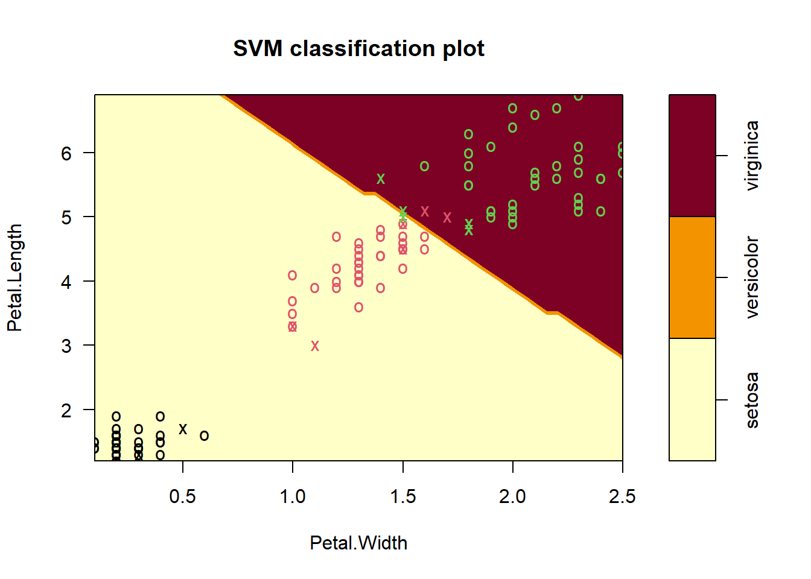
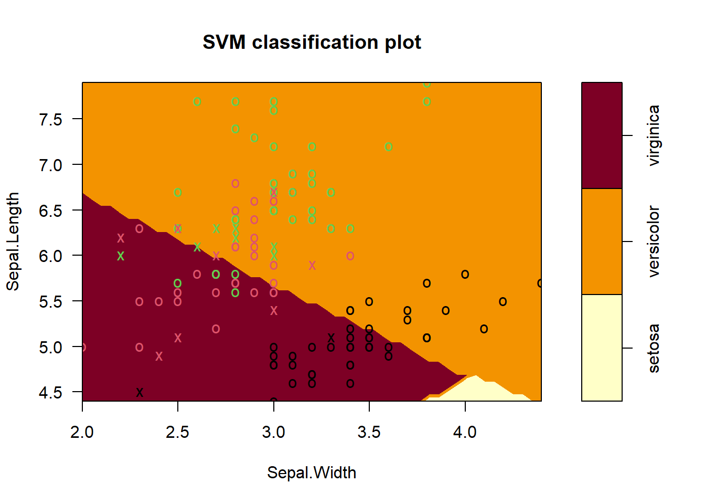
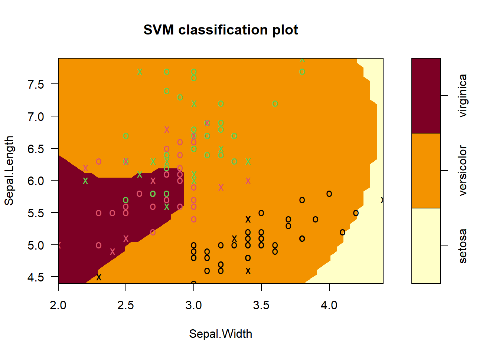

#
library(tidyverse)
library(e1071) # package for SVM
library(caret) # helper functionsSupport Vector Machine (Lab)
1 Loading Packages
2 Loading the data
Inspect the structure of the data
data(iris)
str(iris)'data.frame': 150 obs. of 5 variables:
$ Sepal.Length: num 5.1 4.9 4.7 4.6 5 5.4 4.6 5 4.4 4.9 ...
$ Sepal.Width : num 3.5 3 3.2 3.1 3.6 3.9 3.4 3.4 2.9 3.1 ...
$ Petal.Length: num 1.4 1.4 1.3 1.5 1.4 1.7 1.4 1.5 1.4 1.5 ...
$ Petal.Width : num 0.2 0.2 0.2 0.2 0.2 0.4 0.3 0.2 0.2 0.1 ...
$ Species : Factor w/ 3 levels "setosa","versicolor",..: 1 1 1 1 1 1 1 1 1 1 ...3 View the data
Plot the data by Sepal
iris |>
ggplot(aes(x = Sepal.Length, y = Sepal.Width, color = Species))+
geom_point()
Plot the data by petal
iris |>
ggplot(aes(x = Petal.Length, y = Petal.Width, color = Species))+
geom_point()
4 Prepare for Trainig
This function creates a stratified split of data. It splits the dataset into training and testing p = 85 (85% training) while preserving the class proportion of the Species variable. In other words this makes sure the proportion of each class (setosa, versicolor, virginica) in the split is the same as in the original dataset. List = FALSE - when you want the vector as a row numbers not as a list
set.seed(42)
indices <- createDataPartition(iris$Species, p = .85, list = FALSE)Then I use it like this:
- train = 85% rows
- test_in = 15% (remainig) -indices
- test_truth = actual labels for evaluating predictions
train <- iris %>% slice(indices)
test_in <- iris %>% slice(-indices) %>% select(-Species)
test_truth <- iris %>% slice(-indices) %>% pull(Species)5 Train the SVM - Linear kernel
The SVM function has the default cost of 10
set.seed(42)
iris_svm <- svm(Species ~ ., train, kernel = "linear", scale = TRUE, cost = 10)
summary(iris_svm)
Call:
svm(formula = Species ~ ., data = train, kernel = "linear", cost = 10,
scale = TRUE)
Parameters:
SVM-Type: C-classification
SVM-Kernel: linear
cost: 10
Number of Support Vectors: 17
( 2 8 7 )
Number of Classes: 3
Levels:
setosa versicolor virginicawe can visualize the SVM decision boundaries only in two dimensions, even though the model was trained in four dimensions (all iris features).
plot(iris_svm, train, Petal.Length ~ Petal.Width)
For Sepal leaf Dimensions it is needed to be sliced the other dimenstions at a reasonable point
plot(iris_svm, train, Sepal.Length ~ Sepal.Width,
slice = list(Petal.Length = 4.5, Petal.Width = 1.75))
The plots does not show the full SVM, only one projection at the time of the decision Surface into two dimensions
5.1 Predictions
test_pred <- predict(iris_svm, test_in)
table(test_pred)test_pred
setosa versicolor virginica
7 7 7 5.2 Results
conf_matrix <- confusionMatrix(test_pred, test_truth)
conf_matrixConfusion Matrix and Statistics
Reference
Prediction setosa versicolor virginica
setosa 7 0 0
versicolor 0 7 0
virginica 0 0 7
Overall Statistics
Accuracy : 1
95% CI : (0.8389, 1)
No Information Rate : 0.3333
P-Value [Acc > NIR] : 9.56e-11
Kappa : 1
Mcnemar's Test P-Value : NA
Statistics by Class:
Class: setosa Class: versicolor Class: virginica
Sensitivity 1.0000 1.0000 1.0000
Specificity 1.0000 1.0000 1.0000
Pos Pred Value 1.0000 1.0000 1.0000
Neg Pred Value 1.0000 1.0000 1.0000
Prevalence 0.3333 0.3333 0.3333
Detection Rate 0.3333 0.3333 0.3333
Detection Prevalence 0.3333 0.3333 0.3333
Balanced Accuracy 1.0000 1.0000 1.0000The result is 100% accuracy
5.3 Overfitting?
Did the model overfit? even though we got 100% accuracy that might not mean overfitting because:
- setosa is completely linearly separable.
- versicolor vs. virginica are also almost linearly separable in petal space.
6 Train the dataset on radial kernel
- Radial kernel - allows complex curved boundaries
- High cost - tries to classify training points almost perfectly (risk of overfitting)
set.seed(42)
iris_svm2 <- svm(Species ~ ., train, kernel = "radial", scale = TRUE, cost = 100)
summary(iris_svm2)
Call:
svm(formula = Species ~ ., data = train, kernel = "radial", cost = 100,
scale = TRUE)
Parameters:
SVM-Type: C-classification
SVM-Kernel: radial
cost: 100
Number of Support Vectors: 29
( 6 11 12 )
Number of Classes: 3
Levels:
setosa versicolor virginica6.1 Plots
plot(iris_svm2, train, Petal.Length ~ Petal.Width, slice = list(Sepal.Length = 6, Sepal.Width = 3))
plot(iris_svm2, train, Sepal.Length ~ Sepal.Width, slice = list(Petal.Length = 4.5, Petal.Width = 1.75))
6.2 Predictions
test_pred2 <- predict(iris_svm2, test_in)
table(test_pred2)test_pred2
setosa versicolor virginica
7 8 6 6.3 Results
conf_matrix2 <- confusionMatrix(test_pred2, test_truth)
conf_matrix2Confusion Matrix and Statistics
Reference
Prediction setosa versicolor virginica
setosa 7 0 0
versicolor 0 7 1
virginica 0 0 6
Overall Statistics
Accuracy : 0.9524
95% CI : (0.7618, 0.9988)
No Information Rate : 0.3333
P-Value [Acc > NIR] : 4.111e-09
Kappa : 0.9286
Mcnemar's Test P-Value : NA
Statistics by Class:
Class: setosa Class: versicolor Class: virginica
Sensitivity 1.0000 1.0000 0.8571
Specificity 1.0000 0.9286 1.0000
Pos Pred Value 1.0000 0.8750 1.0000
Neg Pred Value 1.0000 1.0000 0.9333
Prevalence 0.3333 0.3333 0.3333
Detection Rate 0.3333 0.3333 0.2857
Detection Prevalence 0.3333 0.3810 0.2857
Balanced Accuracy 1.0000 0.9643 0.9286Setosa (perfect): Prediction = Truth in all 7 cases → flawless.
Versicolor (1 mistake): One virginica was misclassified as versicolor.
Virginica (1 mistake): The same misclassification reflects here → 6/7 correct.
Cost (C) controls how strictly the SVM tries to separate the classes.
6.4 High cost (C = large)
Means:
- Misclassification is heavily punished
- SVM tries very hard to separate data perfectly
- Margin becomes narrow
- Only the critical points (right on the boundary) stay as support vectors
- Fewer points are allowed inside the margin Results in fewer support vectors Because the model becomes more rigid and pushes as many points as possible away from the margin.
6.5 Low cost (C small)
Means:
- Misclassification is acceptable
- SVM allows violations
- Margin becomes wide
- More points fall inside or on the margin
- More points become support vectors
Result in more support vectors Because the model becomes more tolerant, allowing many points to influence the boundary.